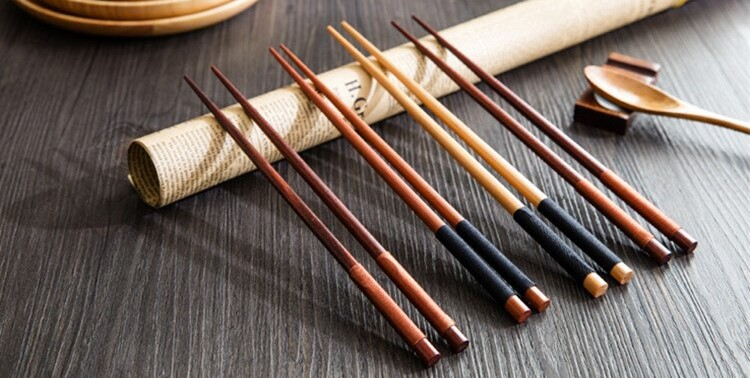
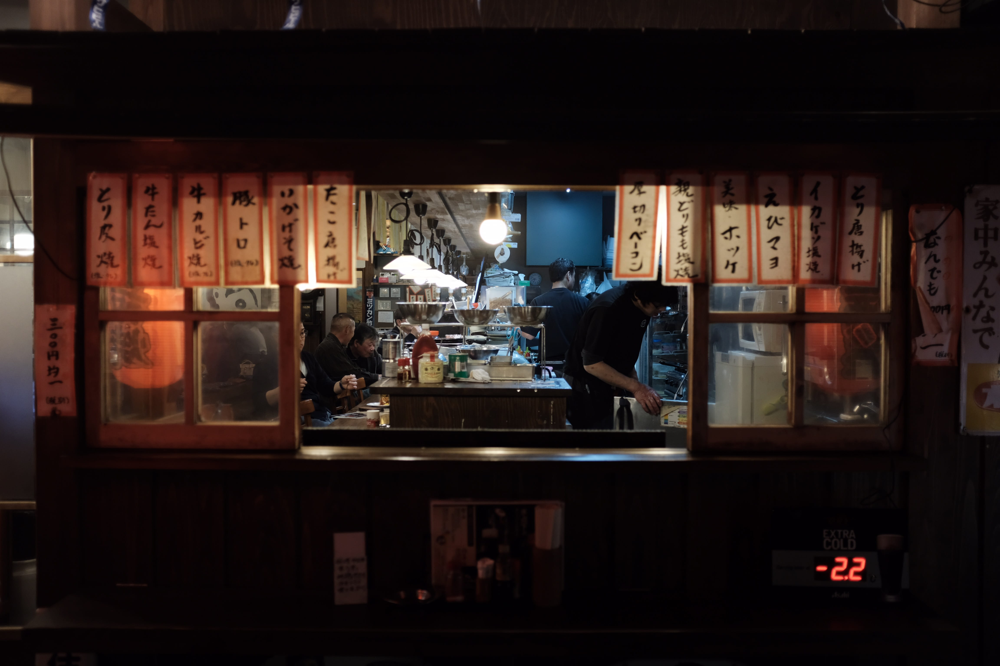

Традиционная кухня
Представляю вам статью, которую полностью можно прочитать по ссылке
Японская еда должна соответствовать пяти вкусам гоми — сладкому, соленому, острому, кислому и горькому. Но есть и шестой, особый вкус, который кулинары этой страны умеют мастерски раскрывать — умами. Он характерен для множества белковых продуктов и созданных на их основе бульонов.
Во всем мире японская кухня справедливо считается эталоном здорового питания. Здесь используют только самые свежие и разнообразные ингредиенты и очень настороженно относятся к продуктам длительного хранения (исключая ферментированные). Блюда должны готовиться быстро, просто и, если это возможно, с минимальной термической обработкой, что позволяет сохранить максимум их природного вкуса и питательной ценности. Еда подается маленькими порциями, а насыщение достигается за счет большого выбора блюд. Любой прием пищи, даже обычный перекус, важен и должен приносить пользу и удовольствие. Такая простая на первый взгляд философия вывела гастрономические традиции Японии на совершенно новый уровень. Сегодня кухня этого государства является мировым достоянием и служит источником вдохновения для лучших кулинаров планеты. А знакомство с ней — один из самых прекрасных поводов для посещения Страны восходящего солнца.
Этикет
Японский столовый этикет основан на признательности гостей хозяевам за их труд. Это проявление японской «философии гостеприимства» — омотэнаси. Безукоризненно следуя правилам, можно получить от трапезы незабываемые впечатления.
Основа японской кухни — равновесие и стремление сохранить первозданный внешний вид и вкус ингредиентов, а не «забивать» его тяжёлыми соусами. Традиционная трапеза включает пять блюд — суп, три вида закусок и пропаренный рис. Суп — чаще всего прозрачный бульон с рыбой, курицей или мисо. Закуски могут включать любые свежие сезонные ингредиенты. Важно и расположение блюд на столе: слева, на месте, предназначенном для самого главного блюда, ставится рис, позади него — закуски, а суп — справа.
Палочки не для этого
Пользоваться палочками просто, но стоит избегать некоторых распространённых ошибок. Не используйте палочки как ложку, нож и вилку. Не накалывайте ничего на палочки и ни на что ими не указывайте. Не надо передвигать палочками по столу тарелки и миски. Два самых главных «не» при использовании палочек для еды — не втыкать их вертикально в блюдо с рисом и не передавать еду «с палочек на палочки».
Как разливать напитки
Возьмите бутылку этикеткой вверх, правой рукой, придерживая за донышко левой. Наливайте другим, но не себе. Когда кто-то наливает напиток вам, будет вежливым придержать и слегка наклонить стакан. В отличие от еды, которую рекомендуется доедать до конца, напитки можно не допивать: пустой стакан — это стакан, который нужно наполнить, так что оставьте немного, если не хотите, чтобы вам налили ещё.
Ссылка на источник
Что сейчас едят Японцы
В Японии считается, что должно быть три приема пищи и в каждом из них обязательно должен быть рис.
Завтрак
Современные японцы часто едят блюда европейской кухни, в том числе и на завтрак. Но традиционный японский завтрак составляют:
- Вареный рис и натто. Натто представляет собой соевые бобы,
их заправляют соусом и кладут сверху
на рис. Так как натто очень богато растительным белком и надолго утоляет голод, это блюдо популярно
именно на завтрак. -
Тамаго-яки – омлет, свернутый в рулет. От привычного нам омлета тамаго-яки
отличается тем, что
в него наливают немного соевого соуса с добавлением сахара. -
Мисосиру – суп из бобовой пасты мисо. Для его приготовления используют
соевый сыр тофу,
водоросли вакамэ и другие ингредиенты. Состав супа во многом зависит от сезона и региона
проживания японца. - Чай. В основном в Японии пьют зеленый чай. Без чаепития не обходится ни одна трапеза.
Обед
Японцы предпочитают легкие обеды. Его основу, конечно, составляет рис. К нему подают рыбу, которая может быть сырой, приготовленной на гриле или маринованной.
Дополнять обед могут вареные овощи или салаты. В качестве заправки в салатах используют рисовый уксус или соевый соус. Майонез практически никогда не использую в традиционной кухне. В конце обеда пьют чай.
Сейчас в Японии все больше ощущаются западные веяния. Поэтому часто можно встретить молодых японцев, обедающих фаст-фудом.
Ужин
Ужинают японцы достаточно плотно. Стандартный ужин включает:
- Рис или лапшу.
-
Суп. Японцы очень любят супы. Чаще всего готовят
мисосиру и суимоно (прозрачные супы).
Они могут быть рыбными, мясными, овощными. Для большинства супов все ингредиенты и
бульон варятся отдельно друг от друга и соединяются только перед подачей на стол.
Примечательно, что супы японцы едят палочками, вылавливая сначала кусочки овощей и мяса.
Затем выпивают бульон прямо из чашки. - Мясо или рыбу в любом виде.
- Овощи, которые могут быть приготовлены на пару.
Ссылка на источник
Рецепты
К сожелению данная статья в разработке